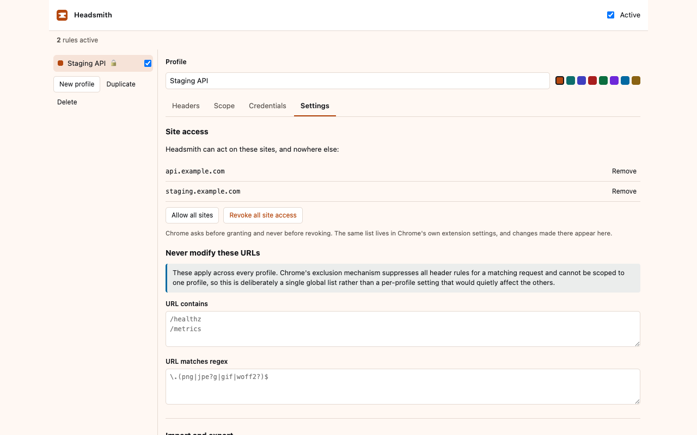
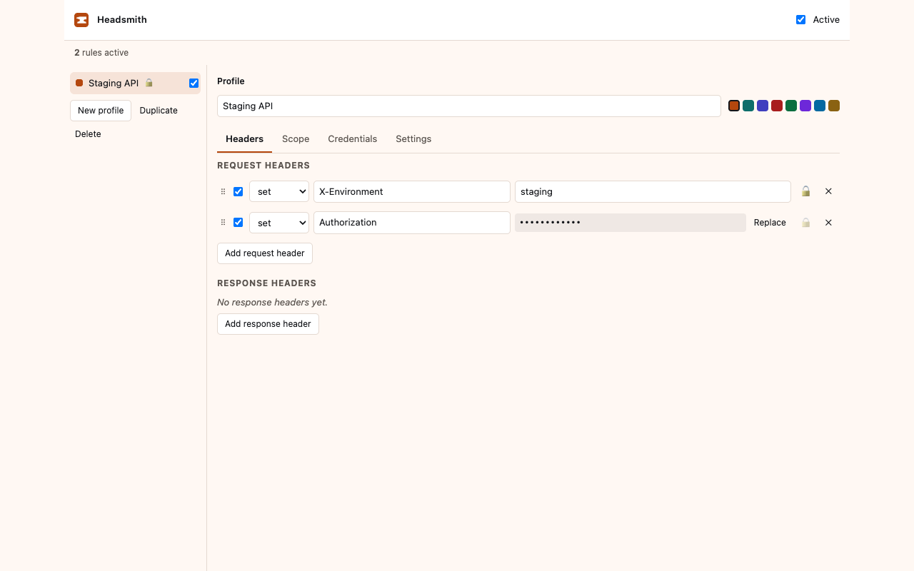
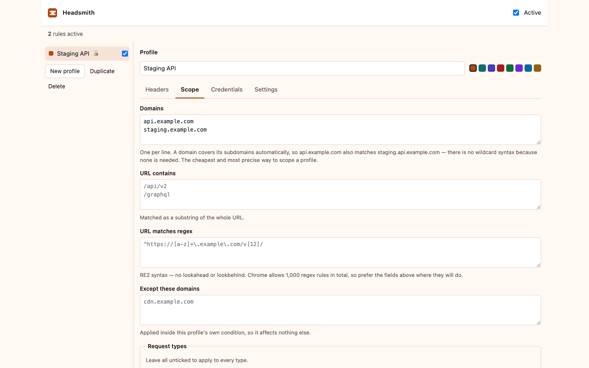
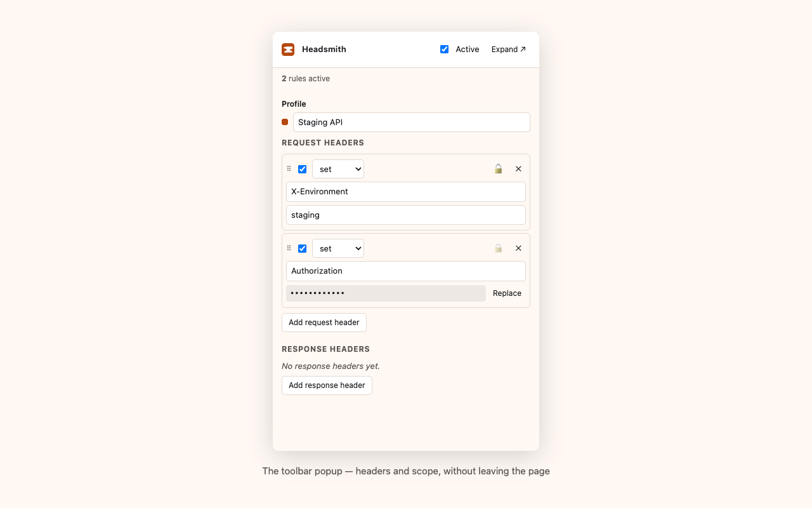

Add, rewrite and remove HTTP headers in Chrome — organised into profiles, scoped to the sites you name.
Free and MIT licensed. Chrome Web Store listing pending review.
This is the point of the project, so it goes first.
Headsmith is built entirely on Chrome's declarativeNetRequest API.
It hands the browser a list of rules and the browser applies them. Headsmith is
never invoked for a request: it does not receive the URL, the headers, the body,
or the response.
That is not a promise about our conduct — it is the shape of the API. There is no code path that could log your browsing, because none of our code runs when a request is made.
Reading traffic would require the webRequest permission. Headsmith
does not request it, and a check in the build pipeline fails if that ever changes.
No “read and change all your data on all websites” prompt, because at install it has been granted nothing at all.
When a profile names a domain, Chrome asks about that domain and nothing else. Every site you have allowed is listed inside the extension and can be withdrawn there — granting is never one-way.
The honest limit. A profile scoped by URL text or a regular expression instead of a domain can match any site, so those ask for broader access — and say so before asking, with a nudge to name a domain instead.

Set, append or remove either, with Chrome's own constraints surfaced as you type rather than at apply time.
Group rules, switch between them, enable them individually, or pause everything with a keyboard shortcut.
By domain, URL substring, regular expression and request type, with per-profile exclusions and a global never-modify list.
Values that look like credentials never live in a profile. Session-only by default, or an AES-GCM vault behind a passphrase.
If a credential cannot be resolved, the operation is dropped rather than sent empty — an Authorization header with nothing after it is worse than none.
No analytics, no telemetry, no remote fonts or scripts. A CI check scans the built extension and fails on any network primitive.


The Web Store signs the package itself, from a key the developer never holds — so a store signature says the bytes came from a developer account, and nothing about where they came from.
Every Headsmith release closes that gap. The build is reproducible, so you can rebuild it and compare:
git clone https://github.com/bcollard/headsmith.git && cd headsmith
git checkout v1.3.2
nvm use # the Node version affects the output
npm ci
node scripts/verify-reproducible.mjs ~/Downloads/headsmith-1.3.2.zipAnd each release carries a provenance attestation binding those exact bytes to a commit:
gh attestation verify headsmith-1.3.2.zip --repo bcollard/headsmithThe shipped bundle is deliberately not minified. Publishing with provenance is worth little if the thing being attested is an unreadable chunk.
(await fetch(location.href)).headers.get('Your-Header') — that request
is same-origin, so every header is visible to it.
example.com
matches api.example.com too. Chrome accepts spellings like
*.example.com and then silently matches nothing; the editor flags those
and offers to correct them.
activeTab instead of host permissions?activeTab grants it on a click — which
happens after the page has already loaded, and is revoked by the next navigation.
declarativeNetRequest cannot read an existing header value, so a true
merge is not possible — only replacing a whole value.

Not yet on the Chrome Web Store — the listing is in review. Until then, from source:
git clone https://github.com/bcollard/headsmith.git && cd headsmith
npm ci
npm run buildchrome://extensionsdist/chrome
To check it is doing something, run npm run echo for a local server that
shows the headers it actually received, then scope a profile to
localhost.